1 SHAP
1.1 A model that gives one number
Suppose we have trained a machine learning model on three features, A, B, and C. We feed it one observation and it returns a prediction:
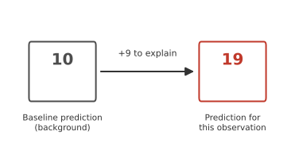
- On its own, that number says nothing about why the model produced it. Saying “feature A is important” does not explain this particular 19 either. Importance, on its own, is not an explanation of one prediction.
What we can do is compare 19 to something. Figure 1.1 shows a second number, 10, sitting next to it. That 10 is a baseline: roughly speaking, what the model would predict if it knew nothing about this specific observation’s features, only what is typical. Once we have both numbers, a real question appears. Nine units separate the baseline from this observation’s prediction, and some combination of A, B, and C must account for them.
1.2 Explaining by removing features
The model was trained once, on all three features, and it stays exactly as it was trained. Nothing here involves training separate models on different subsets of features. What we can do instead is ask what the model would predict if some of its inputs were made unavailable and only the rest were kept.
“Unavailable” does not mean deleted. Most models expect a fixed number of inputs and cannot simply run with fewer. Later in this chapter we will show precisely what stands in for a missing feature. For now, treat it as a black box: there is a way to tell the model “pretend you don’t know B or C,” and it returns a value.
Do this for every possible group of retained features, and a picture like the one below appears.
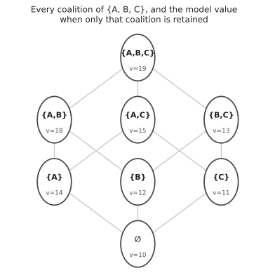
Each of these groups is usually called a coalition, borrowing a term from economics: a set of features that are, for the moment, “in” while the rest are “out.” Figure 1.2 shows all eight coalitions of three features, together with what the model outputs when only that coalition is retained. The bottom is the baseline, 10, where nothing is retained. The top is 19, the full prediction, where nothing is removed. Between them sit six partial coalitions.
Nothing about this picture is specific to A, B, and C being three named quantities. Any model with any features produces the same kind of lattice, just larger. The question we are working toward is how to move from this lattice to a single number for each feature: how much of the nine-unit gap belongs to A, how much to B, how much to C.
1.3 A feature’s contribution is not fixed
A natural first guess is to remove one feature at a time from the full set and see how much the prediction drops. Remove A from the full coalition ABC and the prediction falls from 19 to 13, a drop of 6. That single number, tempting as it is, does not tell the whole story.
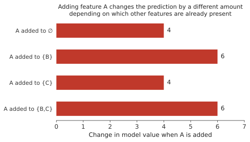
Figure 1.3 adds feature A into four different starting points instead. Added to nothing, A is worth 4. Added to B, it is worth 6. Added to C, it is worth 4 again. Added to both B and C, it is worth 6. The same feature, the same model, the same observation, four different numbers. Whatever A “means” to this model on this observation, it is not one fixed quantity sitting inside the model waiting to be read off. Its measured effect depends on what else is already present when it gets added.
This kind of context dependence can arise when the model contains interactions or other nonlinear structure. It can also arise from how missing features are represented and from relationships among predictors. The important point for now is simply that a feature’s contribution need not be the same in every context.
If you already know linear regression, it is worth being precise about how this fits with what you know. For a purely additive linear model, evaluated against a simple background where features are treated independently, a feature’s contribution turns out to be the same regardless of which order the features are added in, so this whole question of “which context” would not even arise. SHAP is built for the general case, where order can matter, so it uses a definition that works whether or not it does.
1.4 Every order in which features can be added
If no single context is the right one to measure A in, a reasonable response is to check all of them and combine the results. With three features there are six possible orders in which A, B, and C could be added one at a time, starting from nothing and ending at the full set.
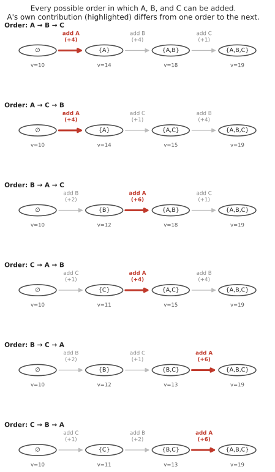
Figure 1.4 lays out all six. In two of them A is added first, straight into an empty coalition, and it is worth 4 both times. In two of them A is added second, after either B or C alone, and it is worth 6 or 4 depending on which one went first. In the last two, A is added last, after both of the others are already in place, and it is worth 6 both times.
Read down the highlighted numbers: 4, 4, 6, 4, 6, 6. Average them and you get 5.
The idea behind that average is worth stating plainly, because it is the core idea of SHAP: consider every possible order in which the features could enter the model’s explanation. Each time feature A enters, record how much the model’s output changes. Then average those recorded changes over all possible orders. Do the same bookkeeping for B and for C, and their averages come out to 3 and 1. Three numbers, one for each feature, and together they add up to exactly the nine units separating the baseline from the prediction: 5 plus 3 plus 1 is 9.
This averaged, order-respecting contribution is what the rest of the course calls a feature’s Shapley value, and the assignment of one such number to every feature is what SHAP computes. The name will not matter until the mathematics chapter, where this averaging is written out formally and the weight given to each order is derived rather than assumed.
1.5 The baseline
The baseline in Figure 1.1 was quietly set to 10 and left there. It deserves more attention, because it is the single most common source of confusion about what a SHAP explanation actually says.
The baseline is not automatically zero. It is not automatically the average of the outcome variable in some dataset you have lying around. Here is what it actually is, in words before any notation: take every observation in a chosen background population, ask the fitted model for its prediction on each one, and average those predictions. The baseline is the average model prediction, not the model’s prediction on the average observation. These are not the same thing, and for a nonlinear model they can differ a great deal. Written compactly, the baseline is \(E[f(X)]\), the expected model output over the background, not \(f(E[X])\), the model output at the background’s average feature values.
The background, formally, is whatever collection of reference observations you decide represents “typical.” Change that collection, and the baseline changes, even though the model and the observation being explained have not.
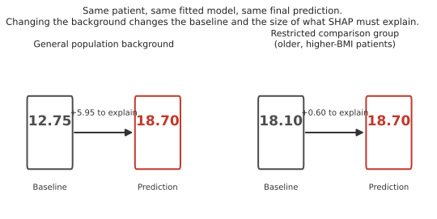
Figure 1.5 makes this concrete with a small clinical example: a patient with age 65, BMI 32, and blood pressure 150, run through the same fitted risk model twice. On the left, the background is a general population sample, and the baseline sits at 12.75, leaving 5.95 units for the features to explain. On the right, the background is a restricted comparison group of older patients with higher BMI, and the baseline rises to 18.10, leaving only 0.60. The patient’s risk score has not moved. What changed is the population this patient is being compared against, and with it, how much there is left to explain.
Put in words, the two panels are answering two different questions about the exact same patient. Against the general population, the question is “why is this patient different from a typical patient?” Against the restricted comparison group, the question becomes “why is this patient different from a typical patient in that older, higher-BMI group?” Same model, same patient, same final prediction, and a different baseline and a different set of SHAP values because the comparison question itself changed.
This is worth stating: a SHAP explanation is a relative statement. It explains a model’s prediction relative to a chosen reference distribution, not relative to some absolute zero.
1.6 What “removing” a feature actually means
We have used the phrase “retain B and C, remove A” throughout this chapter without saying what the model actually receives when a feature is supposedly removed. Almost every fitted model expects a fixed number of inputs, so there is usually no way to hand it only two of three features and get something meaningful back.
What happens instead is masking: the retained features keep the values from the observation being explained, and the removed features are filled in using values taken from the background data, one background row at a time. The model is then evaluated on each of these hybrid rows, and the results are averaged.
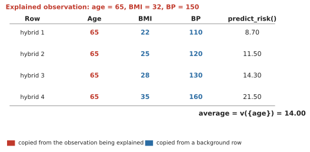
Figure 1.6 works through this for a single feature, age, on the same patient as before. Age is held fixed at 65 throughout, shown in the color used for values taken from the observation being explained. BMI and blood pressure are filled in from four background patients in turn, the same general-population background used for the left panel of Figure 1.5, shown in the color used for values taken from the background. Each of the four resulting hybrid rows, none of which is a real patient, gets fed through the model, and the four outputs are averaged to get one number: 14.00. That average is the model’s value for the coalition “age retained, everything else removed,” the same kind of quantity shown at every node of Figure 1.2.
Every value in that lattice, and every contribution built from it, is computed this way: fix the retained features at the explained observation’s values, fill the rest from the background, evaluate, and average over background rows. There is no retraining and no literal deletion of an input. There is only substitution and averaging.
This particular way of filling in missing values, replacing them from the general background without asking whether the result looks like a plausible patient, is often called marginal SHAP. (Some SHAP software and papers call the same thing “interventional,” a term that will come back in the practice chapter. The name matters less right now than the mechanism.) An alternative, briefly worth knowing about, is conditional SHAP, which instead asks what values of the missing features would be plausible given the features already known, rather than drawing them from the background population as a whole. If age 80 is the retained value, marginal SHAP is willing to combine it with a BMI value taken from anyone in the background, including people much younger. Conditional SHAP would instead try to use BMI values that are plausible for people around age 80. This course uses marginal SHAP throughout, and comes back to why that choice matters later in this chapter.
1.7 Local explanations: the waterfall plot
Once a Shapley value has been computed for every feature of one observation, there is a natural way to display them together.
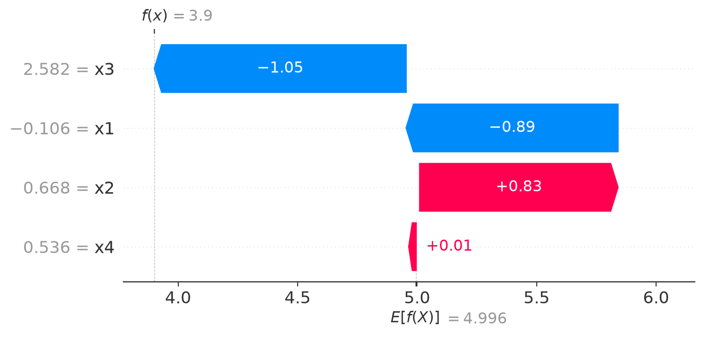
Figure 1.7 is read from the bottom row upward, not left to right. Two different numbers appear on this plot, and it matters that you do not confuse them. On the left, in gray, are the observed feature values for this one patient: x3 was 2.582, x1 was \(-0.106\), x2 was 0.668, x4 was 0.536. Inside each colored bar is a different number, that feature’s SHAP value for this observation: how much it contributed, not what it measured.
Start at the bottom. The baseline, \(E[f(X)] = 4.996\), is marked on the axis. The bottom row, x4, has a SHAP value of \(+0.01\), so the running total moves from 4.996 to 5.006. The next row up, x2, has a SHAP value of \(+0.83\), moving the running total from 5.006 to 5.836. The next row, x1, has a SHAP value of \(-0.89\), moving the running total from 5.836 down to 4.946. The top row, x3, has a SHAP value of \(-1.05\), moving the running total from 4.946 down to 3.9, which is exactly the model’s actual prediction for this patient, \(f(x) = 3.9\).
Notice that x1’s bar happens to land close to the baseline, at 4.946 against a baseline of 4.996. It is tempting to read something into that, as if x1’s bar were “pointing back toward the baseline.” It is not. The bar simply starts wherever the running total already was, 5.836, and subtracts 0.89. That it lands near 4.996 is a coincidence of this particular observation’s numbers, not a rule about how the plot works. Every bar behaves the same way: it starts where the previous row left the running total, and moves by exactly that row’s SHAP value.
Color carries the direction of that movement. A red bar is a positive SHAP value, moving the running total to the right, toward a higher prediction. A blue bar is a negative SHAP value, moving the running total to the left, toward a lower prediction. Color says nothing here about whether the feature’s own value was high or low, only about which direction that feature pushed the prediction for this specific patient given everything else already accounted for.
Two things are worth noticing immediately, because they recur throughout the rest of the course. First, a SHAP value belongs to one feature and one observation at the same time. It is not a general statement about that feature. A different observation, with different feature values, would get a different waterfall, and a feature that pushes the prediction up for one observation can easily push it down for another. Second, the bars add up exactly: baseline plus every SHAP value equals the prediction, with nothing left over. This identity is exact for the kind of calculation shown here. Some faster, approximate ways of computing SHAP values, used when exact calculation is too expensive, can leave a tiny numerical gap unless the software specifically corrects for it, a point the practice chapter returns to.
1.8 From one explanation to many
A single waterfall plot explains a single prediction. Most of the time, the more interesting question is what a model does across many observations at once: which features tend to matter, and in what direction, across an entire dataset.
The obvious first move, averaging the raw SHAP values of a feature across many observations, usually fails in an unhelpful way. A feature that pushes the prediction up for half the observations and down for the other half by similar amounts will average out to nearly zero, even though it clearly affects individual predictions a great deal. What is normally wanted instead is the average of the absolute SHAP value, which cannot cancel itself out.
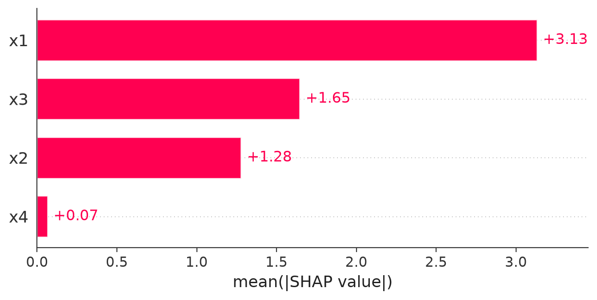
Figure 1.8 shows this for a model trained on four features, named x1 through x4, on data where the true structure is known in advance. You will build this exact model yourself in the next chapter. x1 has by far the largest average absolute SHAP value, x3 and x2 are moderate, and x4 sits almost at zero. Because this is simulated data, we know that x4 has no genuine effect in the data-generating process. Its near-zero mean absolute SHAP value shows that the fitted model has learned to rely very little on x4. SHAP is reporting what the model does, not confirming some independent fact about the world. Here, conveniently, we happen to know both agree.
1.9 The beeswarm plot
A bar chart of averages is useful but throws away a lot of information: every individual observation’s SHAP value for a feature gets collapsed into a single number. The beeswarm plot keeps the individual values visible.
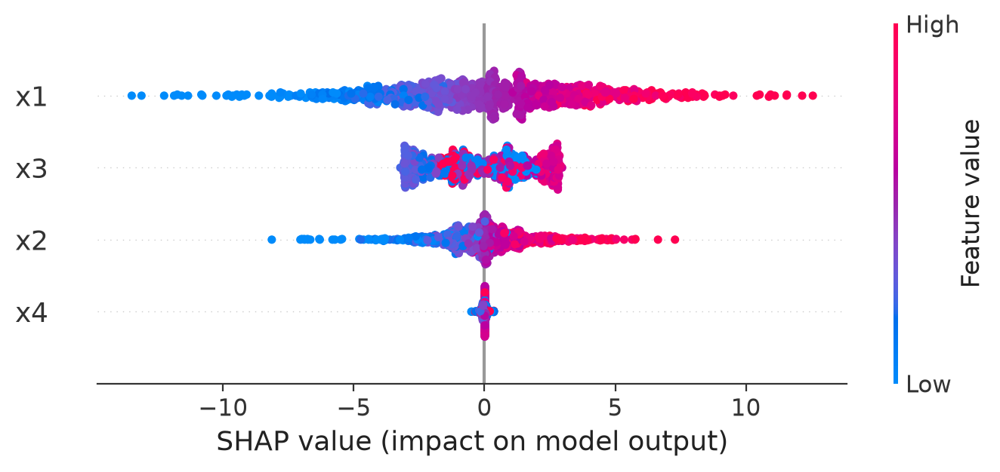
Every element of Figure 1.9 carries meaning. Each row is one feature, ordered from most to least influential by the same average absolute SHAP value as the bar chart. Within a row, each dot is one observation, and its horizontal position is that observation’s SHAP value for this feature: how much that feature pushed that observation’s prediction up or down. Color encodes the observed value of the feature itself, not the SHAP value, running from low (blue) to high (red) on whatever scale that feature was measured on.
Two different things can be read from a row, and it is worth keeping them separate. Horizontal spread, how far left and right the dots reach, shows how much that feature’s contribution varies across observations: a feature that can swing a prediction by a large amount for some observations and barely at all for others will have a wide row. Vertical stacking, how many dots pile up around one horizontal position, shows how many observations share a similar SHAP value there: a thick band means many observations were affected in a similar way at that point, not that those observations are somehow more important.
Read x1’s row and a pattern appears: low values of x1 (blue) tend to sit on the negative side, high values (red) tend to sit on the positive side. This suggests that the fitted model has learned a roughly monotonic relationship for x1, a feature whose effect tends to move in one direction as the feature itself increases, though the dependence plot in the next section shows this kind of relationship far more precisely than a beeswarm row can. Read x3’s row and the colors are mixed together across the width of the band rather than sorted from one end to the other, a sign that x3’s relationship with its own SHAP value is not simply increasing or decreasing. x4 barely spreads out at all, consistent with it having little effect.
Be careful not to over-generalize the color pairing. In x1’s row, blue (low values) happens to sit on the negative side and red (high values) on the positive side, but this pairing is a property of how this particular feature affects this particular model, not a rule about SHAP itself. A different feature in a different model could just as easily show red points sitting on the negative side, meaning that high values of that feature push the prediction down. Color always means the same thing, the observed feature value, but which side of zero that color lands on is something you have to read off the plot each time, not assume in advance.
1.10 The dependence plot
The beeswarm plot hints at whether a feature’s effect is monotonic or not, but a dedicated dependence plot shows the relationship directly, with the observed feature value on the horizontal axis and that feature’s SHAP value on the vertical axis.
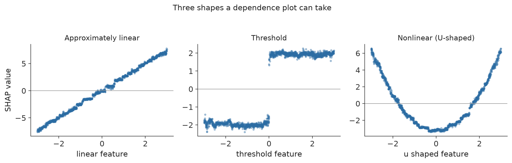
Figure 1.10 shows three of the shapes this relationship commonly takes, each from a fitted model. On the left, the SHAP value rises steadily as the feature increases: a roughly linear relationship, the simplest case. In the middle, the SHAP value is flat and low below a threshold, flat and high above it, with a sharp jump at the threshold itself: the model has effectively learned a cutoff. On the right, the SHAP value is high at both extremes of the feature and dips in the middle, a U-shaped relationship. Reading it in words: low values of this feature push the prediction up, middle values push it down (or push it up only weakly), and high values push it up again. Both extremes move the prediction in the same direction relative to the baseline, while the middle range does not, something no single “the effect of this feature is positive” or “negative” statement could describe correctly. As with every SHAP plot in this chapter, this describes how the fitted model responds to the feature. It is not, by itself, evidence for what would happen in reality if that feature’s value were deliberately changed.
A dependence plot can reveal exactly this kind of relationship even when the underlying model is a black box, because it is reading the model’s behavior back out through the SHAP values rather than assuming a shape in advance.
In all three examples so far, we have mainly looked at how a feature’s own value relates to its own SHAP value, one dot moving along one curve. But what if two observations have almost the same feature value, and still end up with very different SHAP values? That question is what the next section is about.
1.11 Interactions
Start from the simplest possible idea, before any terminology: the effect of one feature may depend on the value of another feature.
Suppose a model predicts a risk score from, among other features, x1 and x2. Two real patients in our test data both have very similar x2 values, close to 1. One of them, with x1 around \(-1.8\), gets a SHAP value for x2 of about \(-0.15\). The other, with x1 around \(1.3\), gets a SHAP value for x2 of about \(+3.35\).
Ask the obvious question: if x2 has essentially the same value in both patients, why did x2 contribute barely anything for one of them and a large positive amount for the other? The value of x2 did not change between the two patients. What changed was x1. The model is therefore using x2 differently depending on what x1 was. This is what we mean by an interaction in the fitted model: the contribution of one feature depends on the value of another. It describes a property of the fitted model’s behavior, not necessarily anything about biology or cause and effect in the real world.
The same two patients, and everyone else in the test set, appear in the plot below.
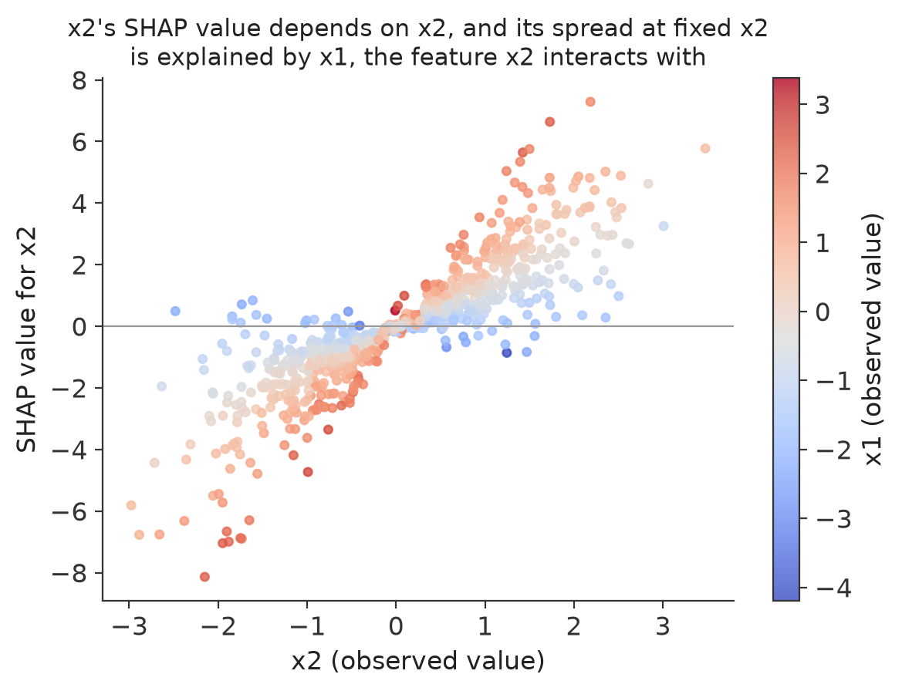
Read the axes carefully before reading the pattern. The horizontal position of a point tells us the value of x2 for that observation. The vertical position tells us how much x2 contributed to that observation’s prediction, its SHAP value for x2. The color of the point tells us the value of x1 for that same observation, from blue (low x1) to red (high x1).
Look at a single vertical slice of the plot, say around x2 = 1. The points there are not all the same height. Some sit low, some sit high, and this is the vertical spread the question above was pointing at. On its own, vertical spread at one x2 value means this: if many observations share almost the same x2 value but have noticeably different SHAP values for x2, then x2’s value alone cannot explain why its contribution differs across them. Something else must be changing how the model uses x2. That alone is a clue that x2 may be interacting with another feature, not proof of which feature it is.
This is where the coloring earns its place. If the points with high x1 (red) consistently sit above the points with low x1 (blue), even when their x2 values are similar, x1 becomes a strong candidate for the feature that is changing x2’s effect. That is exactly the pattern in Figure 1.11: at almost every x2 value, red points sit above blue points, and the upward slope even looks steeper among the red points than among the blue ones. Coloring by x1 turned “something is going on” into “x1 looks like the reason.”
It is worth being careful about exactly what this plot does and does not show. Vertical spread by itself does not prove an interaction with whichever feature was used for coloring. It is evidence of context dependence, a sign that x2’s contribution is not fixed. Coloring by a candidate feature and seeing the spread line up with it is what turns that evidence into a specific, testable suggestion about which feature is involved.
There are formal SHAP interaction values that split a feature’s contribution into a main effect and a set of pairwise interaction terms with every other feature, computed directly rather than read off a colored scatter plot. They belong in a later chapter. Here, the goal is only to recognize what an interaction looks like visually and to reason about it carefully.
Interaction is not the same idea as correlation, and it is worth keeping the two apart. Correlation means two features tend to take related values in the data: older patients may tend to have higher blood pressure, for instance, a statement about how the features are distributed. Interaction means the fitted model uses one feature differently depending on the value of another: the model might treat BMI as a much stronger driver of risk for older patients than for younger ones, a statement about how the model behaves. A dataset can have correlated features whose effects do not interact at all, and a model can show a strong interaction between two features that are not correlated in the data in any way.
1.12 When SHAP is a good choice
SHAP is worth reaching for when the question is about a fitted model’s behavior rather than about the data on its own. It is well suited to explaining why one specific prediction came out the way it did, to comparing what drove two different predictions from the same model, to inspecting whether a model has learned a linear, threshold, or more complicated relationship for a given feature, to finding interactions between features, to studying whether a model behaves consistently across different subgroups of observations, and to giving both a per-observation and an across-the-dataset view of a model’s behavior using the same underlying numbers.
1.13 When SHAP should be interpreted carefully
A handful of situations can make a SHAP explanation misleading if they are not kept in mind.
Correlated features. The masking mechanism described earlier fills a removed feature’s value from the background, without conditioning on the retained feature values. Suppose the patient being explained has age 80 and BMI 31, and one background patient has age 25 and BMI 20. If age is retained and BMI is masked, marginal SHAP is willing to construct the hybrid combination age 80, BMI 20, simply because that background patient’s BMI was available, not because that combination is realistic. The problem is not that BMI was sampled incorrectly on its own. It is that BMI was sampled without any regard for the fact that age was fixed at 80. When several features are masked at once and happen to come from the same background row, as in Figure 1.6, their relationships with each other are preserved. It is specifically their relationship with the retained feature that marginal masking ignores.
Figure 1.12 shows this with two correlated variables: an observation with a high value on both, marked with a star, and the hybrid rows built while computing that observation’s SHAP value for the first variable alone. Those hybrids, marked with squares, keep the high value of the first variable but borrow the second variable from background rows without regard to the correlation between the two, so several of them land well below the narrow diagonal band where real data actually falls. The model is being asked to make predictions for combinations of values it may never have seen during training, and the resulting SHAP values inherit that extrapolation. Later chapters return to this problem directly and cover conditional and grouped alternatives to the masking used here, each answering a related but different question.
A poorly chosen background. Figure 1.5 already showed that the background changes both the baseline and the size of what needs explaining. A background that does not represent a sensible comparison group will produce a technically correct but practically confusing explanation.
Unstable models. If small changes to the training data would have produced a noticeably different model, that model’s SHAP values inherit the same instability, and should not be read as more precise than the underlying fit actually is.
One-hot encoded variables. A single categorical feature that has been split into several 0/1 columns will have its SHAP attribution split across those columns too, even though the columns represent one underlying quantity. For example, a “color” feature with values red, blue, and green is commonly encoded as three separate columns, color_red, color_blue, and color_green. A blue observation would have color_red = 0, color_blue = 1, color_green = 0, and every one of these three columns can receive its own SHAP value, including the two that are zero. A dummy variable equal to zero does not mean zero contribution: “not red” can itself be information the model uses, and color_red can carry a nonzero SHAP value even for an observation where it equals zero. If the goal is to understand the importance of the original “color” variable as a whole, it is usually more useful to add the three dummy columns’ SHAP contributions back together than to read each one in isolation.
High dimensionality and computational cost. The number of possible coalitions grows very quickly with the number of features, and computing exact Shapley values grows with it. The mathematics chapter covers this growth directly and the algorithms built to work around it.
Classification output scale. The SHAP calculation itself is not fundamentally different for a classifier than for a regression model. What changes is what is being explained: a regression model’s SHAP values explain a predicted numeric outcome, while a classifier’s SHAP values explain a probability, a log-odds score, or some other class score, and these are not interchangeable scales. Always state which class’s score is being explained before interpreting a sign. For the “malignant” class, a positive SHAP value means that feature pushed the model’s output toward a higher malignant score or probability, and a negative SHAP value means it pushed away from it. Avoid calling a negative contribution “protective” without immediately making clear that this describes the fitted model’s behavior, not evidence about a real protective effect. Probability is usually the easier scale to interpret, but some software reports the log-odds scale natively instead, and the two scales are not related by simply converting one baseline into the other. A later chapter works through both scales directly with a fitted classifier. For a model with more than two classes, there is typically a separate set of SHAP values for each class, since a feature can push toward one class while pushing away from another.
Global importance is not automatically scientific importance. A large average absolute SHAP value says a feature strongly affects this particular model’s output. It is not automatically evidence that the feature is scientifically important, especially if it is correlated with other candidate explanations that could equally well account for the same predictive signal.
SHAP importance is not permutation importance. Permutation importance asks how much a model’s predictive performance degrades if a feature’s values are shuffled, destroying its relationship with the outcome. It is a statement about the model’s reliance on a feature for accuracy, measured in aggregate. SHAP asks how much a feature pushed one particular prediction up or down, relative to a chosen baseline. These are different questions, and the two methods can rank the same features differently without either one being wrong.
Dependence plots are not dose-response curves. A dependence plot as clean as the ones in Figure 1.10 shows how a fitted model responded to a feature. It should not, by itself, be read as evidence for what would happen if that feature’s real-world value were deliberately changed.